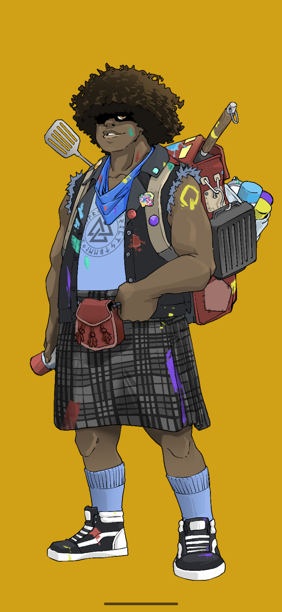

Professional Information
I am a passionate Game Designer, Storyteller, and Author, with a professional history rooted in creating immersive experiences, crafting memorable narratives, and building worlds that invite others to play, imagine, and connect. My work has always centered around the power of interactive storytelling—whether through game systems, collaborative roleplay, or written fiction. Guided by the belief that "Stories are how we remember who we are." I hope to use what I learn this quarter to sharpen my technical skills, expand my creative toolkit, and create even more opportunities to tell stories, preserve meaningful memories, and share new experiences with others.

This is Ace, he's my later ego in my friend's comic book.